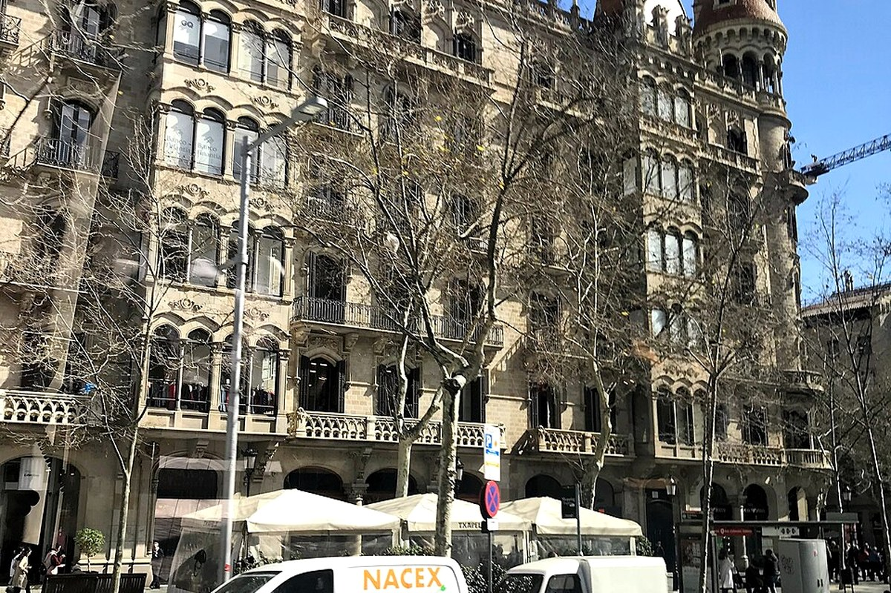

버퍼가 있어야 앞선 예약 변경을 흡수할 수 있다.




세일링 · 파이널 디너 · Sants
후회 없는 여행을 기준으로 가이드·커플·현지인의 관점을 합의한 일정.
예상 도보73분
대중교통42분
택시·차량0분
일정 지점8곳
반드시 참고: 우천 시 Casa Milà 내부·쇼핑·El Born으로 교체.
바다와 파이널 디너가 여행의 마지막 감정을 정리한다.
세일링은 날씨를 보고 무료 취소 상품으로 결정한다.
숙소 인근
브런치
왜 중요한가숙소 인근은(는) 오늘의 흐름에서 다음 장면으로 자연스럽게 이어지는 핵심 지점이다.
볼 포인트브런치. 대표 풍경과 공간의 분위기에 집중한다.
실전 팁혼잡하면 핵심을 보고 이동하고, 예약 장소는 15분 일찍 도착한다.
시간 관리표시된 이동시간에 환승·대기 10분을 더한다.
MetroUrgell Metro Barcelona → Port Olimpic Barcelona25분 · 경로 ↗
Port Olímpic
세일링 출발지
왜 중요한가Port Olímpic은(는) 오늘의 흐름에서 다음 장면으로 자연스럽게 이어지는 핵심 지점이다.
볼 포인트세일링 출발지. 대표 풍경과 공간의 분위기에 집중한다.
실전 팁혼잡하면 핵심을 보고 이동하고, 예약 장소는 15분 일찍 도착한다.
시간 관리표시된 이동시간에 환승·대기 10분을 더한다.
도보Port Olimpic Barcelona → Port Olimpic Barcelona5분 · 경로 ↗
Barcelona Sailing
약 2시간 세일링
왜 중요한가Barcelona Sailing은(는) 오늘의 흐름에서 다음 장면으로 자연스럽게 이어지는 핵심 지점이다.
볼 포인트약 2시간 세일링. 대표 풍경과 공간의 분위기에 집중한다.
실전 팁혼잡하면 핵심을 보고 이동하고, 예약 장소는 15분 일찍 도착한다.
시간 관리표시된 이동시간에 환승·대기 10분을 더한다.
도보Port Olimpic Barcelona → Port Olimpic Restaurants10분 · 경로 ↗
해변 점심
가벼운 점심
왜 중요한가해변 점심은(는) 오늘의 흐름에서 다음 장면으로 자연스럽게 이어지는 핵심 지점이다.
볼 포인트가벼운 점심. 대표 풍경과 공간의 분위기에 집중한다.
실전 팁혼잡하면 핵심을 보고 이동하고, 예약 장소는 15분 일찍 도착한다.
시간 관리표시된 이동시간에 환승·대기 10분을 더한다.
MetroPort Olimpic Barcelona → Urgell Metro Barcelona25분 · 경로 ↗
숙소 복귀
짐 정리
왜 중요한가숙소 복귀은(는) 오늘의 흐름에서 다음 장면으로 자연스럽게 이어지는 핵심 지점이다.
볼 포인트짐 정리. 대표 풍경과 공간의 분위기에 집중한다.
실전 팁혼잡하면 핵심을 보고 이동하고, 예약 장소는 15분 일찍 도착한다.
시간 관리표시된 이동시간에 환승·대기 10분을 더한다.
MetroUrgell Metro Barcelona → 7 Portes Barcelona20분 · 경로 ↗
7 Portes
파이널 디너
왜 중요한가7 Portes은(는) 오늘의 흐름에서 다음 장면으로 자연스럽게 이어지는 핵심 지점이다.
볼 포인트파이널 디너. 대표 풍경과 공간의 분위기에 집중한다.
실전 팁혼잡하면 핵심을 보고 이동하고, 예약 장소는 15분 일찍 도착한다.
시간 관리표시된 이동시간에 환승·대기 10분을 더한다.
Metro7 Portes Barcelona → Festa Major de Sants Barcelona20분 · 경로 ↗
Festa Major de Sants
마지막 축제 산책
왜 중요한가Festa Major de Sants은(는) 오늘의 흐름에서 다음 장면으로 자연스럽게 이어지는 핵심 지점이다.
볼 포인트마지막 축제 산책. 대표 풍경과 공간의 분위기에 집중한다.
실전 팁혼잡하면 핵심을 보고 이동하고, 예약 장소는 15분 일찍 도착한다.
시간 관리표시된 이동시간에 환승·대기 10분을 더한다.
MetroFesta Major de Sants Barcelona → Urgell Metro Barcelona18분 · 경로 ↗
숙소 복귀
마지막 밤 종료
왜 중요한가숙소 복귀은(는) 오늘의 흐름에서 다음 장면으로 자연스럽게 이어지는 핵심 지점이다.
볼 포인트마지막 밤 종료. 대표 풍경과 공간의 분위기에 집중한다.
실전 팁혼잡하면 핵심을 보고 이동하고, 예약 장소는 15분 일찍 도착한다.
시간 관리표시된 이동시간에 환승·대기 10분을 더한다.
오늘의 후회 방지 가이드
세일링에는 멀미약과 얇은 겉옷을 준비한다. Sants는 이미 봤다면 한 시간 정도만 산책한다.